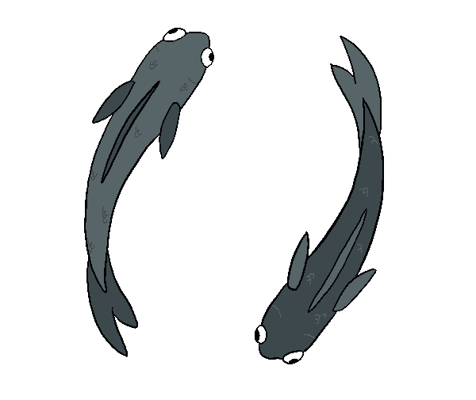

Iara era uma índia guerreira, sua beleza era estonteante e seu canto tão lindo que beirava o místico, seu pai, o pajé, a adorava mais do que tudo. Um dia os irmãos de Iara, com a crescente inveja de ver a adoração de sua irmã, decidiram pôr um fim em sua vida. Ao cair da noite esperaram ela se afastar da aldeia e a atacaram, mas sua habilidade com a adaga era tão superior à deles que ela se defendeu e os matou. Vendo o corpo de seus irmãos, Iara foge para dentro da floresta, com medo da ira de seu pai Na manhã seguinte, o pajé encontra o corpo de seus filhos e percebe o sumiço de Iara. Assumindo que ela os assassinou, ele manda a tribo caçá-la. Iara estava descansando perto do rio quando a encontraram. Seguindo as ordens do pajé, amarraram suas pernas e braços e a lançaram sob a água para morrer. Enquanto Iara estava afundando, os peixes do rio se reuniram em sua conta e a levaram até a superfície, quando ela virou uma sereia. Com sua nova forma, Iara passava seus dias no rio, cantando com sua bela voz. Ao final dos dias, sua canção ecoava nas águas e era ouvida por longas distâncias, atraindo quem estivesse perto e os seduzindo para virem ao encontro de Iara. Quando eles chegavam perto demais, Iara os tomava nos braços e os arrastava até o fundo do rio.